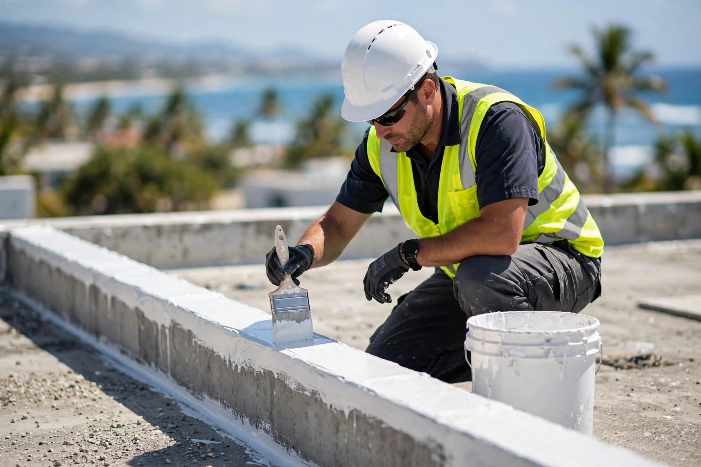
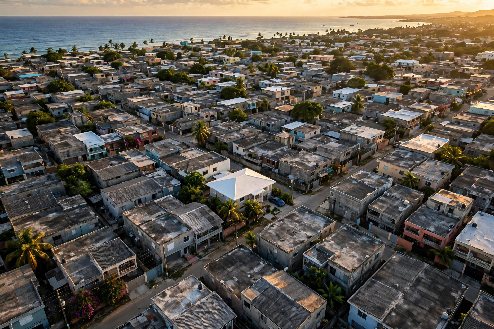

Arecibo · Área norte
Sellado de techos en Arecibo contra el clima del trópico: impermeabilización, reparación de filtraciones y mantenimiento. Urb. University Gardens y área norte.
Resultados reales
Cada foto es un trabajo real de sellado e impermeabilización. Toca cualquier foto para verla grande.


Lo que hacemos
Protegemos tu techo del agua y el sol con sistemas profesionales y detalle de oficio.
Sellado diseñado para aguantar el sol fuerte y los aguaceros del Caribe.
TrópicoSistema impermeable que protege tu techo de la humedad constante.
ProtecciónLocalizamos la filtración, la reparamos y sellamos para que no vuelva.
ReparaciónRevisión y mantenimiento periódico para que el sellado dure más años.
CuidadoAsí de fácil
Escríbenos por WhatsApp con fotos de tu techo. Respuesta rápida, sin compromiso.
Visitamos tu propiedad, inspeccionamos el techo y te damos el estimado gratis.
Preparamos la superficie y aplicamos el sistema completo con detalle profesional.
Tu techo queda sellado contra el agua y el sol. Tranquilidad por años.
Quiénes somos
Sellado de techos en Arecibo contra el clima del trópico: impermeabilización, reparación de filtraciones y mantenimiento. Urb. University Gardens y área norte.
Estimados gratis, trabajo con detalle y un solo objetivo: que tu techo quede sellado contra el agua y el sol por años.
Preguntas frecuentes
En Arecibo, Urb. University Gardens, y servimos el área norte de Puerto Rico.
Un techo bien sellado y con mantenimiento resiste mucho mejor la lluvia intensa del trópico.
Depende del tamaño y la condición del techo; la mayoría de las residencias se completa en uno o dos días.
Por WhatsApp al 787-815-1521: nos describes tu caso y coordinamos.
Con el clima del Caribe se recomienda revisión y limpieza periódica.
Cobertura: Arecibo y el área norte de Puerto Rico. Escríbenos hoy mismo.
Agenda tu estimado
Teléfono / WhatsApp
787-815-1521Cobertura
Arecibo y el área norte de Puerto Rico
Llena esto y te abrimos WhatsApp con tu mensaje listo.
Estimado gratis: envíanos fotos o medidas de tu techo por WhatsApp y te respondemos sin compromiso.
Esta página la creó ManuPro. Escríbenos hoy mismo y cotiza la website profesional de tu negocio.
Cotizar por WhatsApp